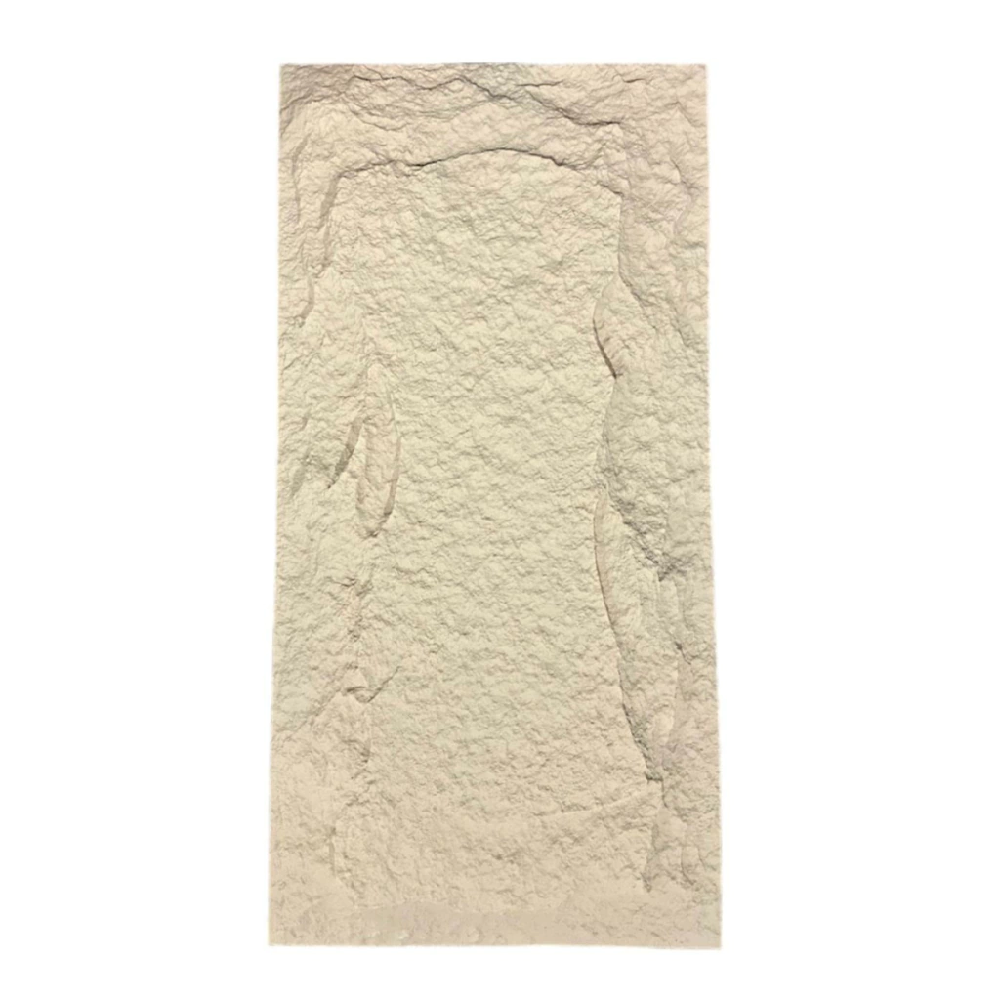

Placas símil piedra
Placa Simil Piedra Pu Arena
Revestimiento liviano con textura símil piedra para generar volumen y profundidad.
- Formato
- 120 X 60
- Disponibilidad
- Sujeta a confirmación
- Modalidad
- Cotización
- Presentación
- Caja de 6 unidades
Precio y disponibilidadDesde $45.675
Te ayudamos a calcular cantidades, accesorios y desperdicio antes de confirmar el pedido.